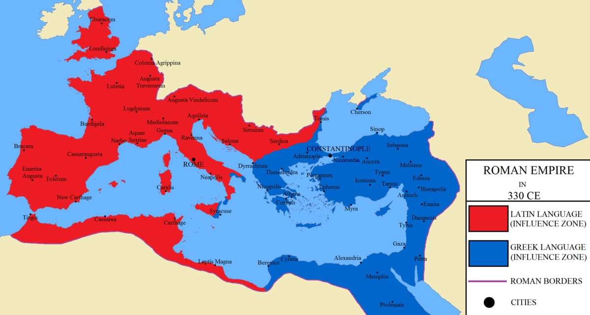

Influências Externas na Evolução do Latim Lusitânia
|
Uma das principais transformações no latim lusitano foi a alteração da acentuação silábica, que serviu como base para todas as mudanças subsequentes. Comparado ao latim da România Oriental, o latim na România Ocidental, incluindo a Lusitânia, reduziu a maioria dos proparoxítonos a paroxítonos, resultando em mudanças morfológicas significativas. Fenômenos fonéticos, como a sonorização das surdas, a síncope das sonoras e a vocalização da gutural surda "c", contribuíram para a evolução do latim vulgar na Lusitânia. A ditongação e a nasalidade também foram características marcantes do processo evolutivo do latim na região.
|

|
A evolução do latim na Lusitânia foi profundamente influenciada por uma série de fatores externos que desempenharam um papel crucial na moldagem da língua e da cultura na região. Desde os primeiros contatos com os povos celtas e ibéricos até as migrações dos povos germânicos durante o declínio do Império Romano, a Lusitânia foi um cenário de intensa interação cultural e linguística.
Os povos celtas exerceram uma influência significativa na evolução do latim na Península Ibérica, incluindo a Lusitânia. Ao entrar em contato com o latim, os celtas introduziram elementos fonéticos e vocabulário que se integraram ao idioma falado na região. Essa influência foi particularmente evidente nas áreas rurais e entre as camadas populares, onde os vestígios do celta deixaram uma marca distinta no latim lusitano. Fenômenos fonéticos e morfológicos resultantes dessa interação podem ser observados em inscrições e registros linguísticos da época, refletindo uma assimilação gradual dos elementos celtas ao latim.
Durante o declínio do Império Romano, a chegada dos povos germânicos à Península Ibérica trouxe consigo uma nova onda de influências linguísticas. Os visigodos, em particular, estabeleceram-se na região, trazendo sua própria língua, cultura e tradições. A fusão dos visigodos com a população romana na Lusitânia teve um impacto profundo na evolução do latim vulgar, preparando o terreno para a transição gradual para o português. A conversão dos visigodos ao cristianismo também desempenhou um papel importante nesse processo, levando à adoção do latim eclesiástico como língua litúrgica e contribuindo para a difusão e consolidação do idioma na região.
Essas influências externas, combinadas com os substratos celta e ibérico pré-existentes, contribuíram para a diversidade e riqueza linguística da Lusitânia. A interação complexa entre diferentes grupos étnicos e culturais ao longo dos séculos moldou o latim na região de maneiras únicas, criando as condições para o surgimento de uma língua distinta e autônoma: o português. O estudo dessas influências externas é fundamental para compreender a evolução histórica e linguística do português e sua posição dentro do contexto linguístico mais amplo da Península Ibérica.